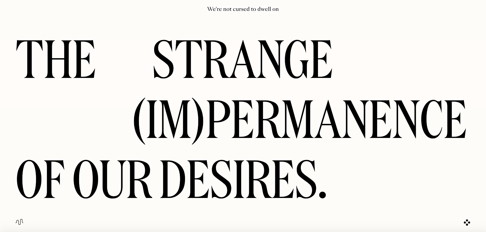

What makes a Website an Experience?
February 4, 2021
Disclaimer: the website, impermanence.us, contains nudity as a part of the art practice, but in my
opinion, is done beautifully and tastefully.
The website impermanence.us, artfully couples scrollable images, enamoring typography,
both in terms of font choice and movement, and music to discuss an illusive topic, one
of impermanence and the transformations we take throughout our lives. The images float
onto the page, zooming in and out on a woman, and this coupled with the simplicity of
the black and white color scheme and the black and white photos, treats the audience to
an experience resembling a movie.
There are very few words on the site, letting the pictures tell the story along with the
movement and the music, allowing the experience and images to be truly interpreted--much
like the article discussed. However, I would not be nearly as enamored with the site if it
were missing the music, as this plays a deep role in the experience and my interpretation
of the photos, affecting my mood throughout the scroll.
Additionally, I do have one critique for the site, as when the photos appear and scroll left
to right, the user must continue to scroll down. This confused me and I spent some time thinking
the page was going to move on it’s own since I could not move it by scrolling left to right.
However, I don't know if this is how scrolling sites work.

Overlays
January 28, 2021
Overlays can be frustrating for users, specifically if there is not an explicit cancel
button or that button is not easily accessible. For instance, buttons that imply they
will actually submit the form, the closable ‘x’ being located in the top right corner
of the window rather than the overlay, or no cancel button and the design intention of
just clicking outside the overlay, all pose problems for users and ruin their experience.
In all of these scenarios, the user freezes, unaware or unable to return to their intended
purpose and oftentimes simply leaves the page and stops the action.
Overlays that appear only when the user is about to navigate away from the site can mitigate
some issues; however, I find that sometimes I want to open a new tab, for research or comparison,
and easily become annoyed by the overlay, which was designed with good intentions but still disrupts
my intentions (especially when the overlay appears repeatedly despite canceling it already).
Thus, it is important to be cognizant of the placement of the close button, the uses and reasons
behind your overlays, and the reactions and feelings your users are going to gain from this overlay.
As the article states, some overlays are helpful (like cautionary messages before preceding or user-initiated
overlays) and others can be more of a hindrance and annoyance to users. Thus, we must proceed with caution and
really think about the reasons behind an overlay.
Form Design
January 21, 2021
The twenty tips to boost usability in form design described many of the problems I encounter
when signing up for a new website or entering in sensitive information for activities like flights
and bookings. The three scenarios that most frustrate me as a user are the hiding of the password I
just entered, the autocompletion or default value option, and pressing the reset button instead of submit.
In all of these scenarios, the design practice usually results in me, as a user, having to re-enter in
my information. I always double check my information is correct, which usually requires me to retype my
password slowly (looking at each letter I press), or in the case of autocompletion, it usually requires
me retyping in my name as I use a nickname for some accounts and have to use my real name for others,
which the computer does not decipher between. Many people likely do not encounter this second issue,
much like the issue surrounding color inclusion and colorblind users, which illustrates the importance
of testing and feedback for discovering issues we may not initially recognize as designers.